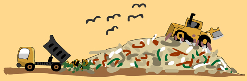

Effects of land pollution:
There can be catastrophic consequences of land pollution in relation to humans, animals, water and soils. The effects are even worse if the garbage is not separated into organic, re-usable and recyclable waste.
Contaminated lands and environments can:
Cause problems in the human respiratory system.
Cause problems on the skin.
Cause various kinds of .
The toxic materials that pollute the soil can get
into
the human body directly by:
Coming into contact with the skin.
Being washed into water sources like reservoirs and rivers.
Eating fruits and vegetables that have been grown in polluted soil.
Breathing in polluted dust or particles.

Dump sites and landfills also come with serious problems like:
Very bad smell and odour in the town.
Landfills breed rodents like rats, mice and insects, who in-turn transmit diseases.
Landfills in towns do not attract tourists to the town. The town will loose revenue.
Many landfills are always burning and they cause further.